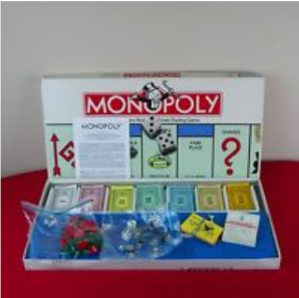
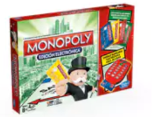

Antes
Un juego creado con la función de servir como herramienta para enseñar las teorías acerca de la justicia social y económicas extraídas del estudio titulado Progreso y Miseria de Henry George
Monopoly
Comercializado por primera vez en el año 1935
A lo largo de 80 años el juego ha sufrido una notable evolucion. Sus multiples ediciones y sus tantas versiones han dado pie a que se cambiara desde la caja que lo contiene hasta los elementos que lo componen. Logrando así, mantenerse como el favorito a tráves de las décadas
Ahora
Con los años, la finalidad del juego cambió no solo para disfrutar un buen rato, negociar propiedades y hasta haciendo usp de medios electrónicos para todas las transacciones que requiere el juego
